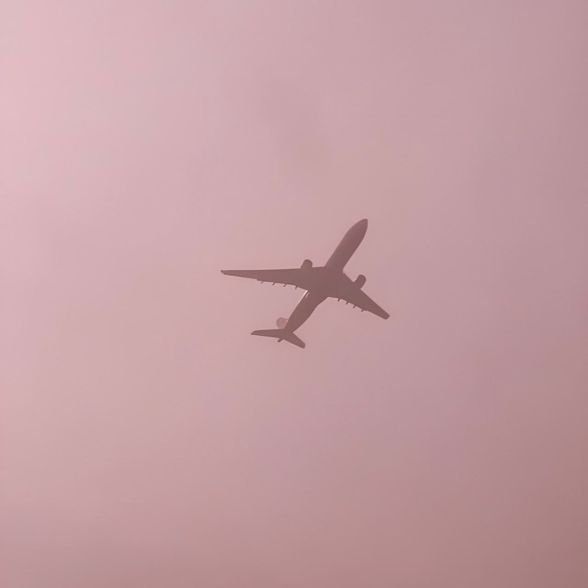
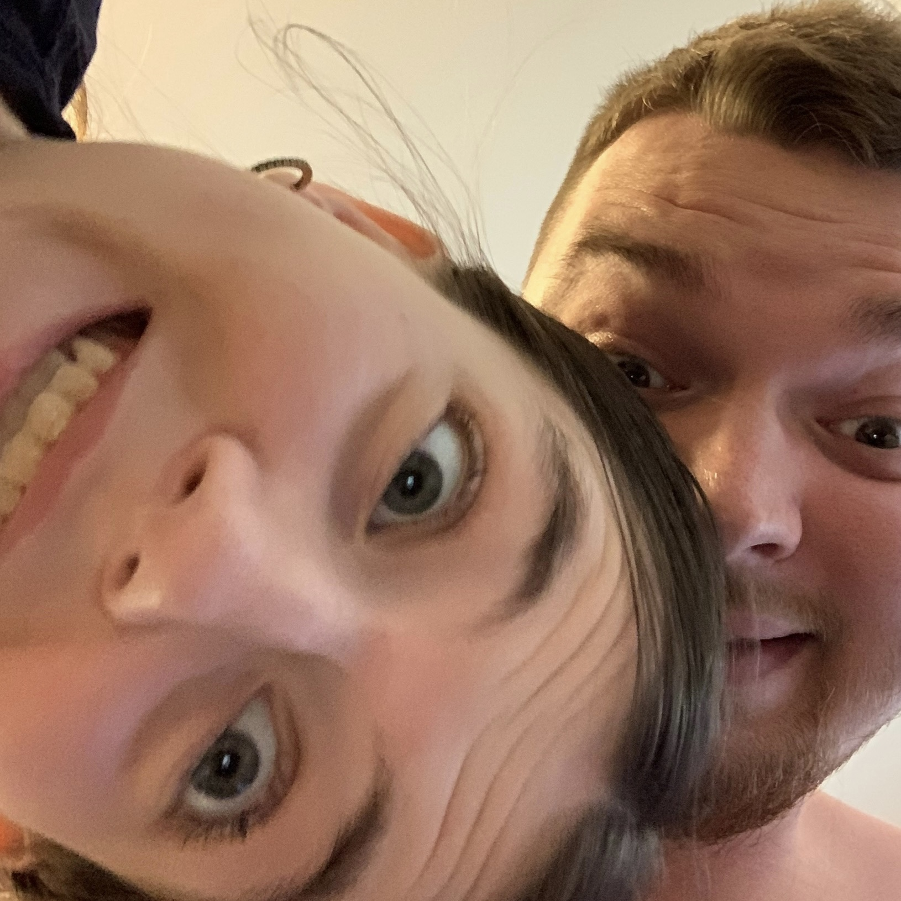
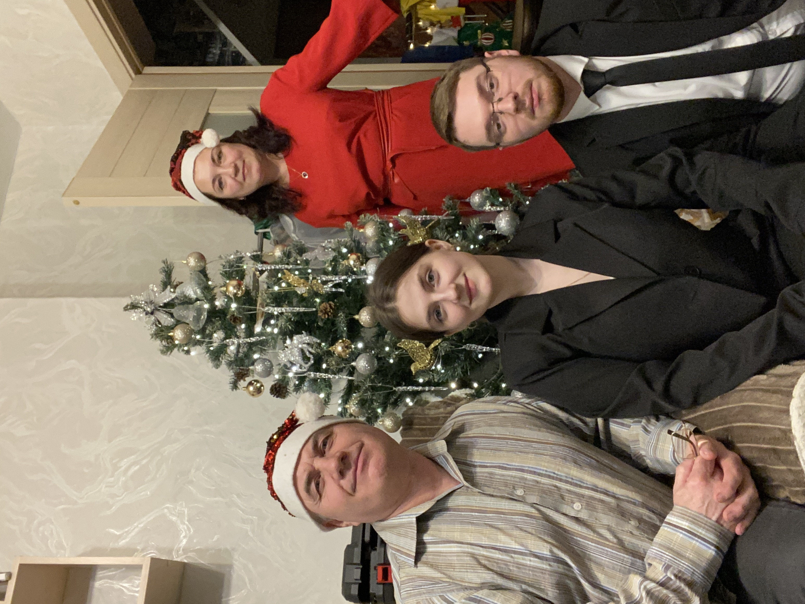
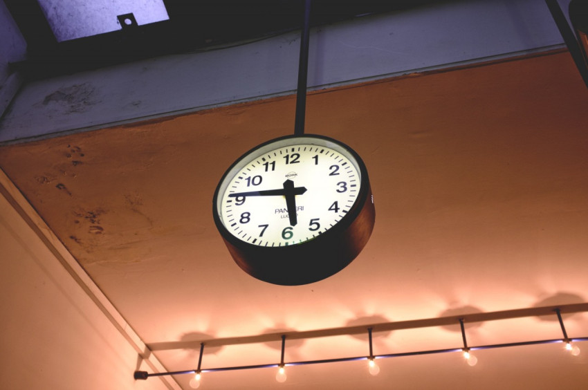
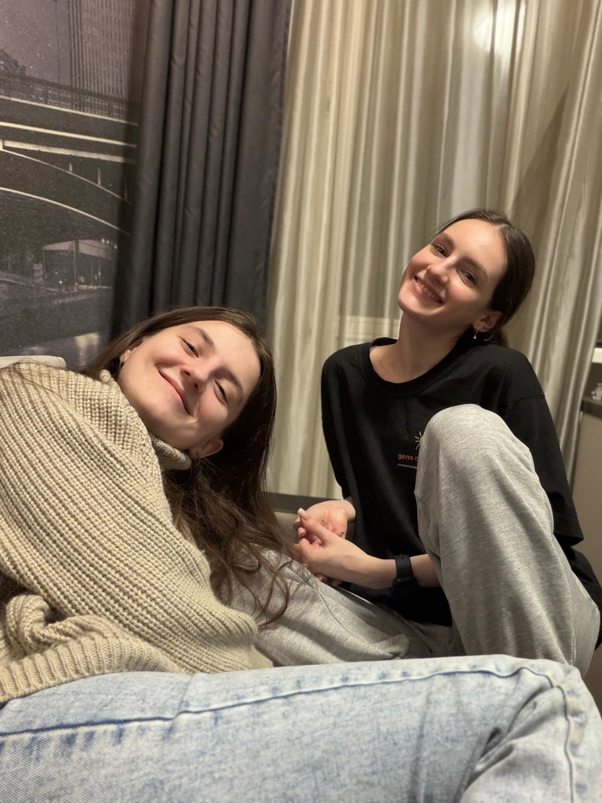
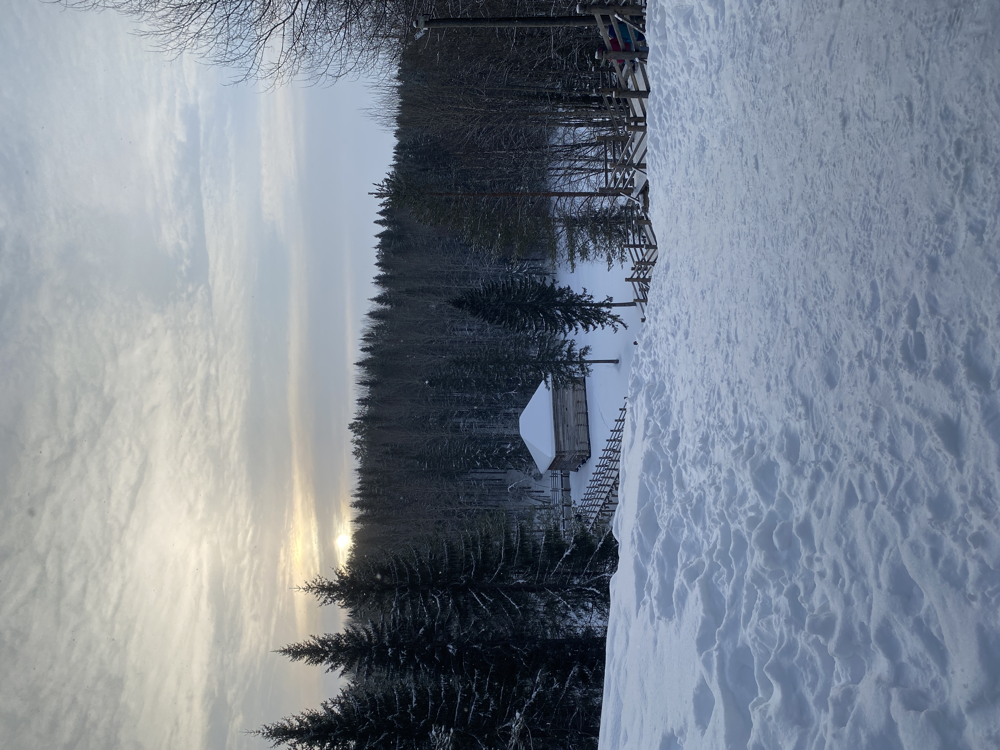
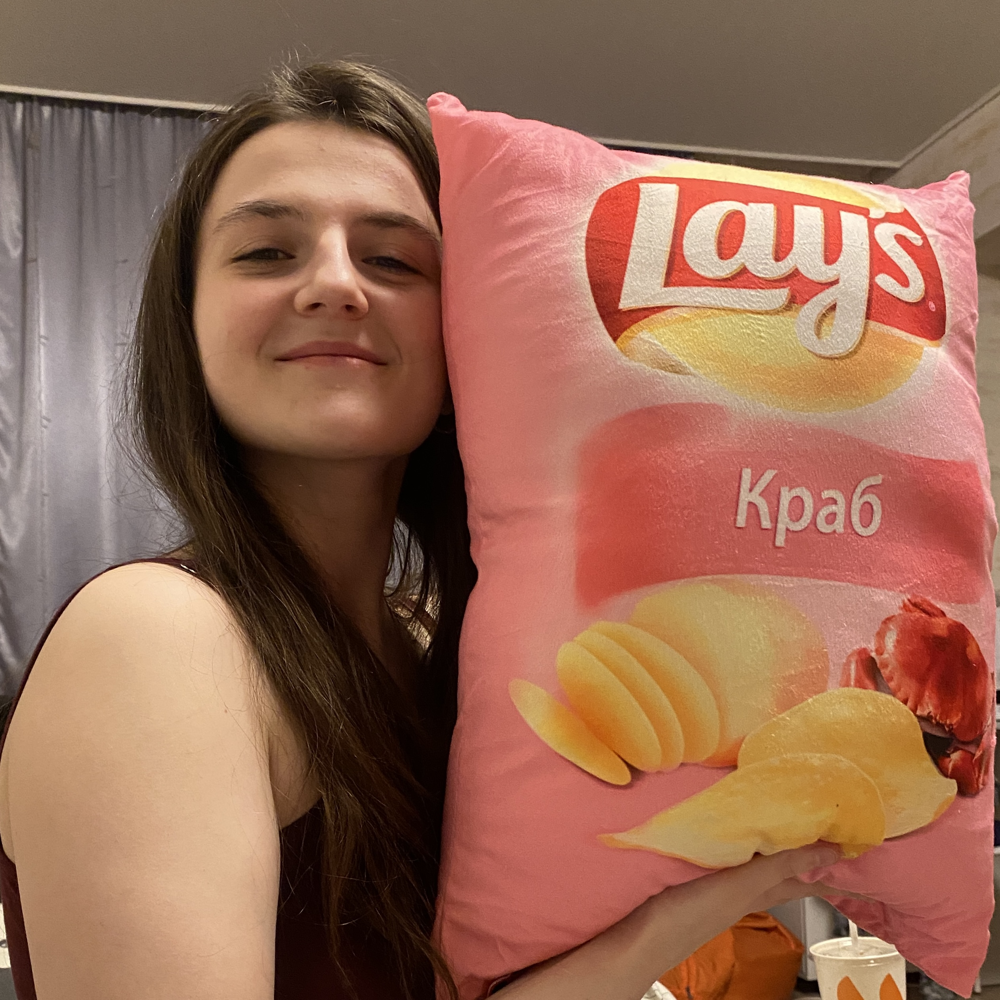
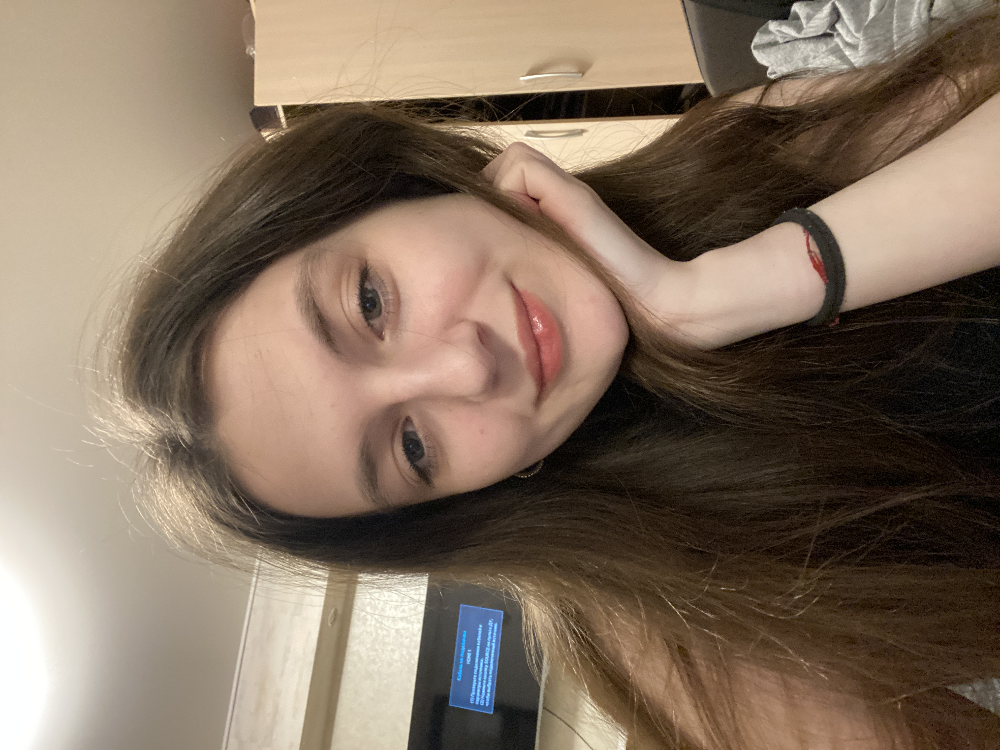

-
Фритрек и нулевой спринт: Подготовка к работе
</Вдохновлена>
Это было самое начало пути. На этом этапе важно было проникнуться основами и настроиться на учёбу. И, возможно, подумать, как новые знания могут повлиять на ваше будущее.
Я была очень вдохновлена. Думала об обучении уже два года, и решила стартовать уже после окончания вуза, чтобы не запариваться над двумя учёбами одновременно. Но всё же не стала оттягивать момент, поэтому теперь параллельно пишу диплом, работаю в двух местах и учусь в Практикуме!
Но на нулевом спринте я не думала о возможных последствиях – мне нравилась мысль, что стартую в абсолютно новую для себя сферу и начинаю изучать что-то с нуля. Трудно? Безусловно! Непонятные слова, новые символы, которых я избегала на информатике, еще и функции... Но так выглядит любое начинание, так что я не боялась этого.
-
1 спринт: Я — чистый лист
</Справляюсь>
На первых этапах мы работали со страхами и сомнениями, которые часто испытывают новички. Один из них — страх перед чистым листом. Это, конечно же, намного сложнее, чем боязнь куска бумаги. Часто за этим ощущением скрываются более глубокие вопросы: с чего начать? а вдруг будет слишком сложно? что, если я не справлюсь?
Первый спринт, на удивление, не казался мне сложным. Правда, гриды меня сбивали с толку... Помню, как делала готовый кейс – когда он у меня получился, я была в восторге. Не верилось, что я сама это сделала. И даже решения моё и ревьюера было схоже!
Но потом началась проектная работа, и вот тут я застопорилась :) Опять эти гриды, волнение от того, что работу будут проверять, понимание, что количество итераций ограничено, да ещё и мой синдром отличника не давал спокойно выдохнуть. Хорошо, что времени было много благодаря новогодним выходным – ощущение праздника вдохновляло, поэтому ПР сдана без особых проблем.
-
1 спринт: А если не получится?
</Получится>
Первый проект — позади! Но это всё ещё самое начало пути. Радость могла быстро померкнуть и смениться ожиданием провала. Или вы, наоборот, могли вдохновиться успехами и поверить в себя.
Конечно, сдача первой проектной работы меня вдохновила. Но я и понимала, что чем дальше – тем сложнее. Меня сильно поддерживала мысль родных в период новогодних праздников – когда я говорила о том, что начала учиться новому, мне отвечали: «Как раз год лошади – она любит усердных». Не то чтобы я суеверная, но фраза успокаивала!
-
2 спринт: Погоня за идеалом
</Успеть>
На этом этапе вы уже достаточно разбирались в основах вёрстки, чтобы понять, как много ещё впереди. Вы могли попытаться погнаться за идеалом и понять, что он недостижим. А, может, вы вовсе и не подвержены перфекционизму и вместо того, чтобы сделать идеально, старались просто сделать.
Точно, здесь у меня отключился синдром отличника и я начала мыслить «главное – сделать». Темп обучения, конечно, не давал расслабиться, да и праздники закончились, ещё вторая работа появилась, поэтому пришлось искать силы на теорию. Но она увлекала – с псевдоклассами познакомилась во время работы над PET-проектом от наставника. Было интересно разобраться подробнее.
-
2 спринт: О тех, кто рядом
</Спасибо>
Всё это время вы были не одиноки (хотя, возможно, иногда и чувствовали, что одни против целого мира). Вас окружали одногруппники, команда сопровождения и просто близкие люди, которым можно пожаловаться, если очередной макет просто так не поддавался. Осваивать что-то новое легче, когда рядом есть единомышленники, не правда ли?
Хорошо, что есть место, где можно сказать спасибо сразу всем! Команде сопровождения – за помощь, разъяснения и поддержку. Одногруппникам – за то, что не сдавались! И отдельно тому, кто оказался подкованным в этой сфере – так обучение давалось легче :)
И, конечно, близким. К моменту окончания второго спринта я оказалась в стадии отчаяния. Мне не хотелось прекращать обучение, но внешние обстоятельства свалились огромным комом. Именно поддержка семьи помогла мне пройти этот этап без последствий, и я осталась в строю.
-
3 спринт: Обходные стратегии
</Опаздываю>
На этом курсе вы постоянно решали разные задачи. В какой-то момент вам могло показаться, что решения просто иссякли. Значит, пришло время посмотреть на задачу под другим углом.
На третьем спринте я поняла, что не успею уложиться к дедлайну. Относительные единицы измерения, адаптивность, даже проценты – всё напоминало нелюбимую математику. Теория шла тяжело, а при виде макета для третьей проектной работы уже опустились руки.
Стартовала в этот спринт сильно позже, чем в предыдущие, и напоминание от «Дедлайнера» о приближении сроков меня напрягало. Но оказалось все не таким уж и сложным – главное было начать.
-
3 спринт: Когда опускаются руки
</Перемены>
Во время учёбы часто возникает чувство, когда не знаешь, за что хвататься. Вроде и проектную пора сдавать, и задачи хочется порешать, и в теории получше разобраться, и жизнь не забыть пожить. В такие моменты очень нужна концентрация. Вспомните, откуда вы её черпали.
Во мне есть недостаток, который порой бывает преимуществом. Это моя гиперответственность. Мне не надо искать источники вдохновения или концентрации – я просто знаю, что должна это сделать. И пожить, и поучиться, и поработать, и дела по дому сделать.
И ещё порой спасала мысль о том, что я хочу изменить свою жизнь. Развиваться вместе с миром, делать что-то новое, пробовать себя в сферах, куда бы раньше даже не полезла. Это ощущение перемен и было источником моей мотивации и концентрации.
-
«Сейчас я здесь»
</Смогу>
Сейчас вы уже очень много знаете о вёрстке. Но это только начало. Во-первых, впереди ещё много материала про «красотищу». Во-вторых, с окончанием курса учёба не заканчивается. Вёрстка — это целый мир. И этот мир постоянно меняется. Познать его полностью не получится, но это тот случай, когда важен сам процесс познания. Ведь часто путь — и есть результат.
Только к началу четвертого спринта мне удалось оглянуться назад. Свои достижения мы часто принимаем за «должное», хотя это результат труда, желания и усилий. К этому моменту я понимаю, что могу описать страницу с HTML и подправить внешний вид с CSS. А ещё полгода назад я даже не знала, что существует CSS :)
Впереди еще много непростых знаний. JS вызывает немало вопросов, но я уверена, что смогу пройти этот путь благодаря одногруппникам, команде сопровождения, моим близким. И, конечно, своим усилиям.